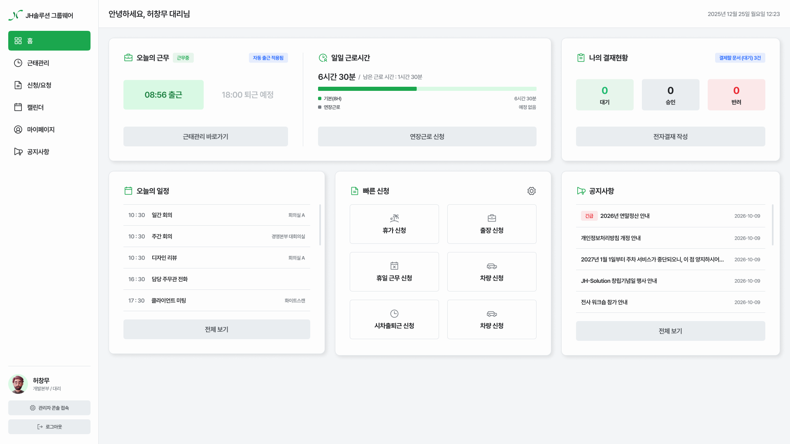
CASE STUDY 05 / 05
사내 그룹웨어 HR 관리 플랫폼
조직과 사용자 권한을 기준으로 인사·근태·결재 업무를 연결한 사내 플랫폼이에요.
프로젝트 개요
사내 업무 및 인사 관리 프로세스를 통합하고, 조직 구조와 사용자 권한을 기준으로 업무 흐름과 협업 환경을 정리한 그룹웨어 플랫폼
HR Management / Web / RBAC / UI/UX
사내 운영 데이터를 조직 체계 중심으로 통합
인사, 근태, 전자결재, 권한 관리처럼 흩어진 업무 기능을 한 흐름으로 묶고, 조직과 역할에 맞게 정보를 정리했어요.
조직 구조 기반 권한 관리 설계
조직도, 부서, 직책, 역할 권한을 기준으로 접근 범위를 나누고, 각 업무에 필요한 메뉴와 데이터를 연결했어요
업무 흐름 중심 전자결재 UX 설계
기안 작성부터 승인·반려·이력 관리까지 단계를 나누고, 현재 상태와 다음 처리 항목을 바로 확인하게 했어요
개발 협업을 위한 인터랙션 및 컴포넌트 동작 기준 정의
모달 위치, 스크롤, 토스트 알림처럼 UI 컴포넌트의 동작 규칙을 정해 개발과 디자인의 해석 차이를 줄였어요.
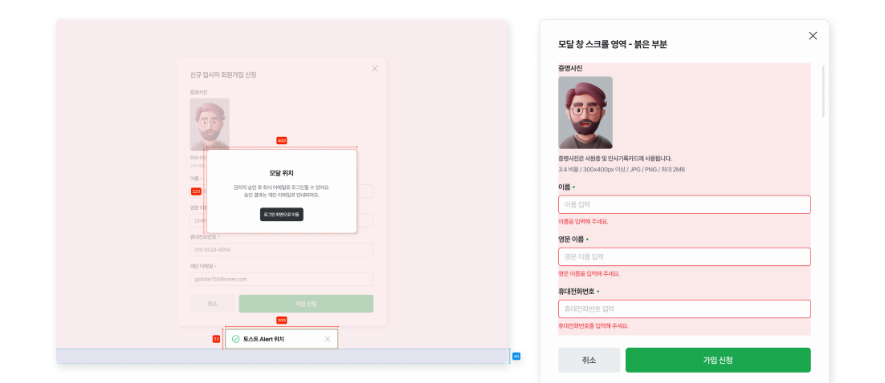
인터랙션 컴포넌트 동작 기준 정의
모달과 토스트의 위치, 드롭다운 동작 방식을 정해 디자인과 개발이 같은 기준으로 구현하게 했어요
화면 전환 및 상태 구조 정의
페이지 이동, 스크롤 영역, 모달 진입과 종료 상태를 정리해 어느 화면에서도 같은 흐름으로 작동하게 했어요
일관된 사용자 경험을 위한 디자인 시스템 설계
화면마다 달랐던 UI 기준을 하나로 묶고, 반복해서 쓸 수 있는 컴포넌트로 정리했어요.
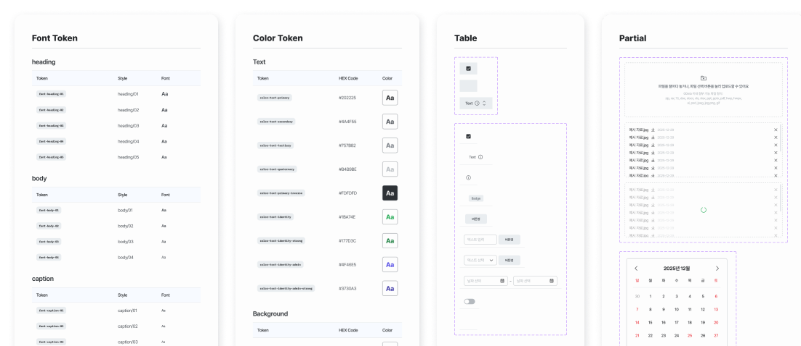
UI 일관성 확보
컬러, 타이포그래피 등 기준을 표준화하여 화면 간 시각적 불균형을 제거하고 사용자 경험의 일관성 유지
컴포넌트 기반 설계
재사용할 수 있는 컴포넌트 구조를 정해 디자인과 개발의 반복 작업을 줄여요.
일상 업무 흐름을 단순화한 직관적 UX 구조
인사, 근태, 결재처럼 반복하는 일을 적은 단계로 처리하도록 정보를 다시 정리하고 화면을 구성했어요.
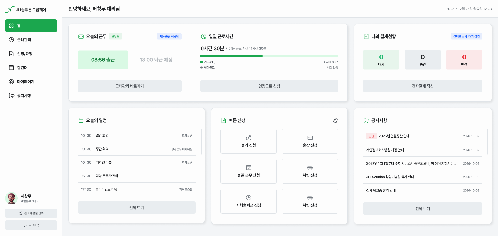
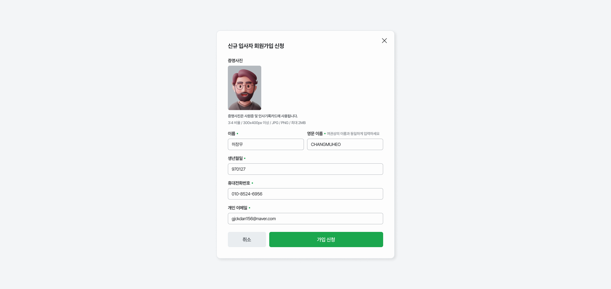
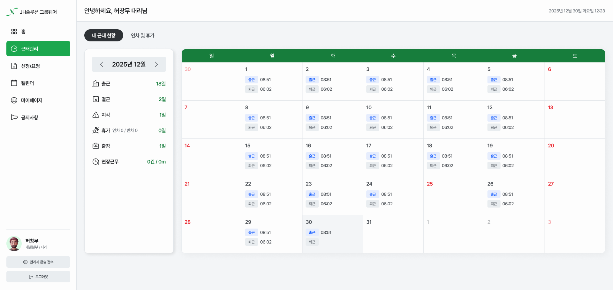
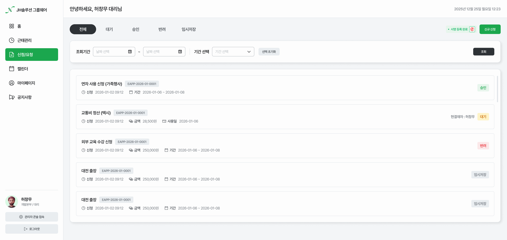
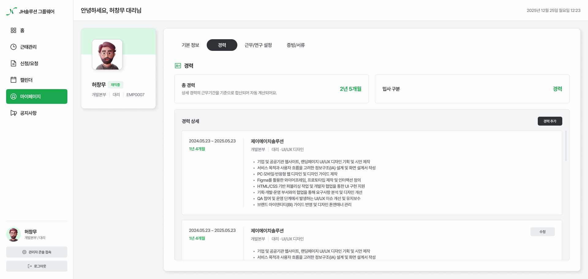
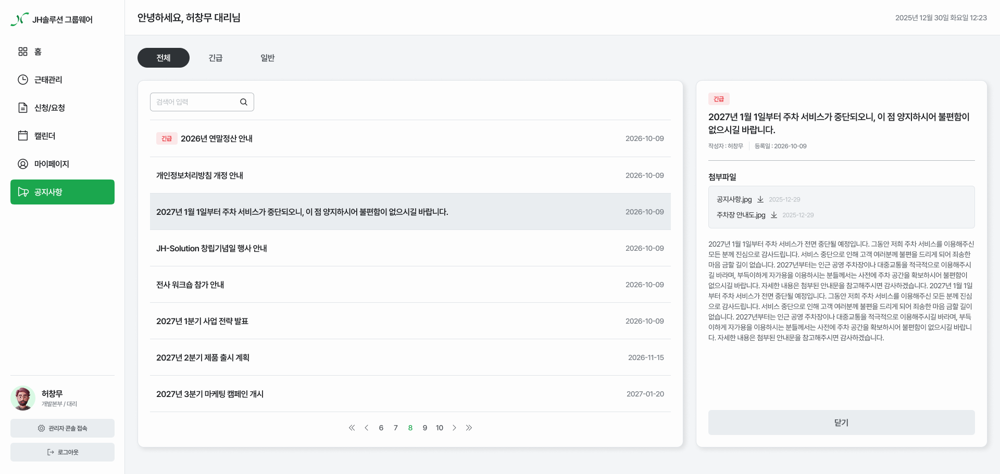
조직 운영과 권한 관리를 통합한 운영 중심 UX 구조
조직, 사용자, 권한, 업무 데이터를 한곳에서 관리하도록 구조를 정리하고 복잡한 설정 단계를 줄였어요.
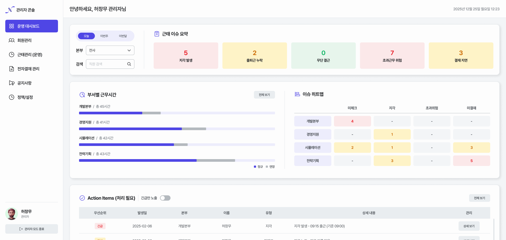
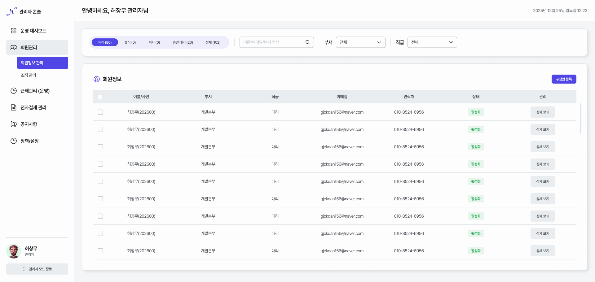
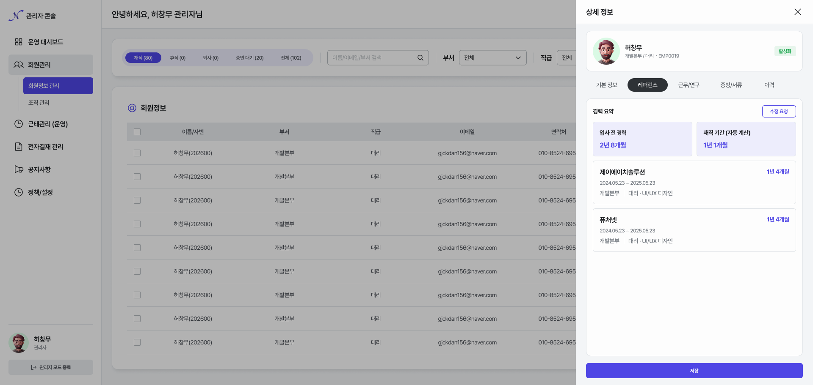
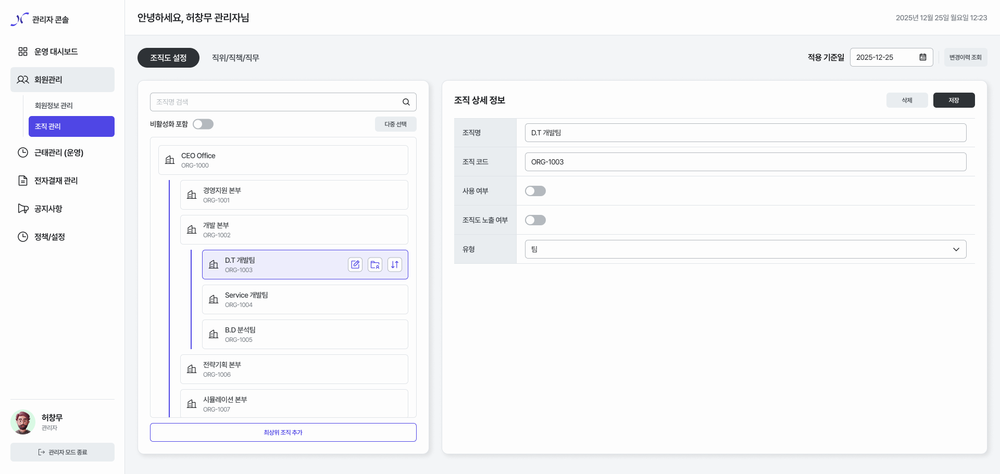
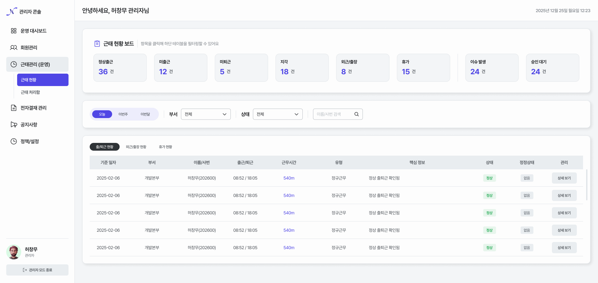
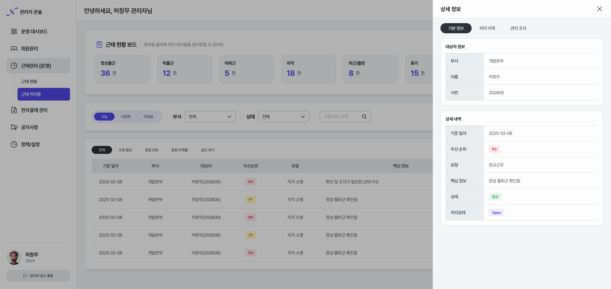